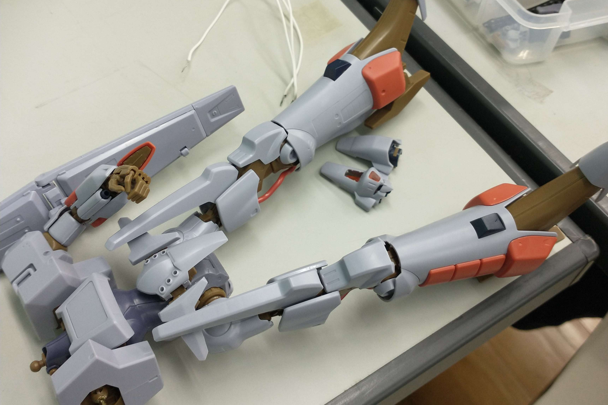

趣味
模型作成(プラモデル)
4月に行った自己紹介で同じ内容になってしまいますが中学生の頃からプラモデルを作っていました
作っていたものはロボットや自動車、戦闘機、種類別に製作していたので色々作っていました
しばらくは特に作ろうとしている模型が無く最後に作ったのが高校生の課題研究の材料で組み立てた以来なので気が向いたら何か作りたいです

音楽
自分は聴いている曲が一般とかけ離れてるので伝わりにくいですがDnb(ドラムンベース)とか聴いてたりしています
一部を話題に挙げるとRAVE Footworkと言った150~170BPM イギリス発祥ジャングル/ドラムンベースが融合した曲となっています
pencil-Miracle
今年の年4月のM3春で新譜リリースしたLOLISTYLE GABBERSと言った同人音楽レコードで例を例えるとコミケとかに置かれている雑誌の音楽バージョンみたいなコンテンツです
これの曲の爽やか風味なRAVE Footworkで今年の中で一番良いと思っています
Dustvoxx,USAO-Divergence
2016年にDustvoxx主催レーベルCYCLIK CONTROLレコードの旧譜から2006年からHARDCORE TANO*Cに所属しているUSAO、TANO*CイベントでもあるMEGATON KICKのDJライブにゲスト出演されているDustvoxxの二人による合作曲です
曲のジャンルではHardtekと言ったフランスを中心としたテクノの一種でありTwerktekなどの近い曲調だったりします
自分的に遅めのHardtek=Twerktekに近いメロディなのでかなり嬉しいです